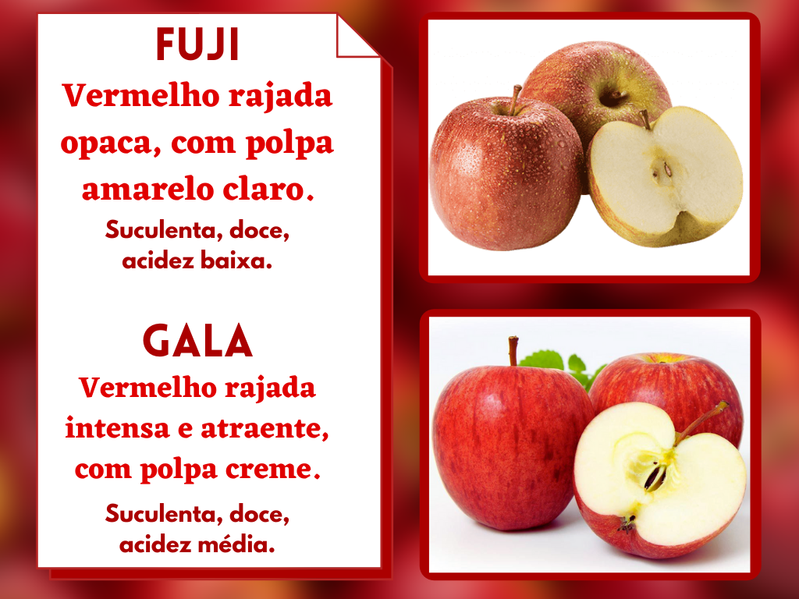
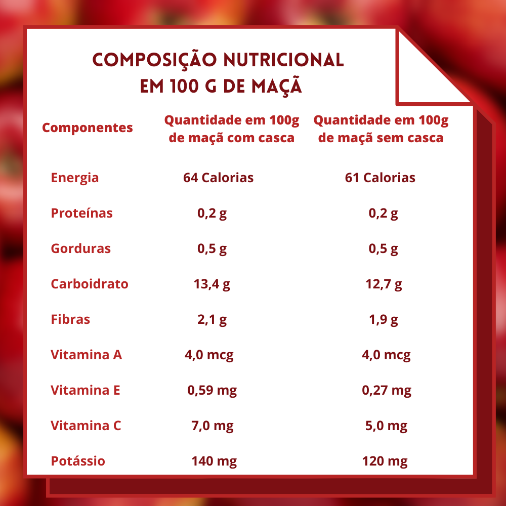

<section class="body">
  

    <section class="historia_maca">
      <h1>A Origem e História da Maçã</h1>
        <p>A maçã é o fruto mais icônico do mundo, cultivado há milênios é símbolo de bondade e saúde.</p>
          <br>
        <p>O fruto da macieira, planta proveniente da região do Cáucaso e da Ásia Central, chegou ao Brasil em meados da década de 1920, mais precisamente em São Paulo, pelos imigrantes.</p>
          <br>
        <p>É inegável a importância de fatores climáticos no desenvolvimento da macieira e na produção de frutos. A fruta, que se tornou símbolo das regiões mais frias do país, tem excelentes propriedades medicinais e <a class="link_receitas" href="receitas.html">receitas que dão água na boca.</a></p>
          <br>
        <p>Há um ditado que diz, "Uma maçã por dia garante uma vida sadia!". Ele não surgiu à toa, já que a fruta tem uma grande concentração de fibras e vitaminas importantes para a prevenção de diversas doenças.</p>

      <h1>Produção Nacional</h1>
        <p>O Brasil tornou-se um grande produtor de maçãs desde a metade dos anos 70, sendo os principais estados responsáveis por grande quantidade da produção: Santa Catarina, Rio Grande do Sul, São Paulo e Paraná.</p>
          <br>
        <p>Atualmente, o Brasil conta com uma safra anual acima de 1 milhão de toneladas, de excelente qualidade, sendo a Gala e a Fuji as variedades mais comercializadas.</p>

    <section class="informacoes">
      <div class="tipos">
            <h1>Você sabe quais são as diferenças entre a Gala e a Fuji?</h1>
        
      </div>

      <div class="tipos">
          <h1>Tabela Nutricional da Maçã</h1>
      
      </div>
    </section>

      <div class="fontes">
        <div><cite>https://www.compal.pt/origem-das-frutas/maca/</cite></div>
        <div><cite>https://brasilescola.uol.com.br/frutas/maca.html</cite> </div>
        <div><cite>https://www.revistaideias.com.br/2017/03/08/o-sabor-saudavel-da-maca</cite></div>
      </div>

  </section>
</section>
